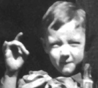

The Unlucky Ones
The Unlucky Ones News?
The Unlucky Ones Grace Budd - He was working for the family before the killings and was in fact not aiming to kill grace but her older brother edward. He offered to take her to a birthday party. He then took her to a house where he striped naked to avoid getting blood on himself. He hid in the closet and waited for her to come. She got there and screamed and he grabbed her and stripped her naked and choked her to death and cut her into small pieces. He then took the “meat” to his rooms and cooked and ate them.
He brought him to the Riker Ave Dumps where there was a house that stood alone. He stirpped him naked and tied his hands and his feet and gagged him with a dirty rag. He burned his clothes and left. He then came back and brutally beat the boy until blood ran off his legs. He drank his blood and after he was done with torture he cut up pieces of him and put them in a sack with rocks and threw them into

Francis McDonnell only 4 years old at the time was found hanging in a tree in a wooded area near his home. He had been sexually assaulted and strangled with suspenders. Investigators found lacerations on his legs and abdomen and his left hamstring had almost been completely torn off his flesh. It was suspected that Fish fled the scene because he got scared someone could hear him - leaving the job unfinished.